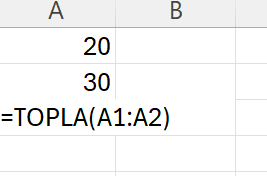

Excel
FEF1002 - Lecture4
Week 3-4-5: Excel Basics; Writing Functions in Excel; Tables and Charts
This module will cover the following concepts:
- History of Excel
- Excel Interface and Screen Elements
- Data Entry and Editing
- Excel Error Codes
- Shortcuts
- Sorting, Filtering, Conditional Formatting
- Writing Functions in Excel
- Tables and Charts in Excel
History of Excel
Excel is a spreadsheet program. The Excel program keeps all kinds of data in tables or lists and provides the ability to perform all the calculations and analyses you need with this data.
Note: Excel has 1,048,576 rows, 16,384 columns, and 17,179,869,184 cells :)
Microsoft released the first version of Excel in 1985. Here are the versions of Excel released to date:
- 1987 Excel 2.0 for Windows
- 1990 Excel 3.0
- 1992 Excel 4.0
- 1993 Excel 5.0 (Office 4.2 & 4.3)
- 1995 Excel for Windows 95 (version 7.0)
- 1997 Excel 97 (version 8.0)
- 1999 Excel 2000 (version 9.0)
- 2001 Excel 2002 (version 10)
- 2003 Office Excel 2003 (version 11)
- 2007 Office Excel 2007 (version 12)
- 2010 Excel 2010 (version 14)
Excel Interface and Screen Elements
To run Excel, type Excel in the Run Command Line and press Enter (You can use the Windows+R key combination for the Run Command Line). Below is the Excel program window.
In Excel, files are called “Workbooks”. Workbooks consist of sheets, and sheets consist of cells. When we save workbooks to our computer, the file extension is “xlsx”.
(Source: https://blog.excel751.com)
Quick Access Toolbar: This ribbon contains commands shown in tabs. The purpose here is to gather the most used commands together to make operations faster and more accessible. This ribbon can be customized according to the person’s requirements.
Tabs: These are the main headings where formulas, designs, and fonts are located. There are 10 tabs visible on the screen. These are: File, Home, Insert, Draw, Page Layout, Formulas, Data, Review, View, and Help tabs.
Apart from these, there is one more tab that you can add from Excel’s settings. This tab is called Developer. More coding is done here. You can access information about how to activate this tab and about the tab by clicking the link.
Groups: Each tab contains commands. Commands with the same function are grouped together. Thus, multiple groups are created in each tab.
Title Bar: This is the area where the file name is written.
Search Bar: You can search for anything (command, feature, formula, template, etc.) in Excel by typing it here.
User Information: This is the section where the name, surname, and profile photo of the user logged in with a Microsoft Excel account are located.
Formula Bar: The user performs operations (writing formulas, four operations, data entry, etc.) in the formula bar.
Gridlines: These are the lines created to define the areas of cells formed by row and column intersections.
Cell: This is where a row and column intersect. Data entries, formulas, etc. are made in this area. Excel has 17,179,869,184 cells.
Column headers are expressed with letters, and row headers with numbers. The cell that is clicked once with the mouse indicates the cell we will start working on actively and is marked with a black frame by Excel.
Row: This is the area where row numbers are written. It starts from 1 and continues incrementing by 1. Operations such as row insertion can be performed in this area.
Column: This is the area where column numbers are located. It starts from A and continues according to alphabetical order. Operations such as new column insertion can be performed in this area.
Name Box: This is a section where the location of the selected cell, table name, or name of the defined area is written.
Select All: When this command is pressed, all cells in the Excel screen are selected.
Worksheets: This is the area where users enter data and use formulas and features/commands when needed.
Add Sheet: When the user wants to switch to a new worksheet, they should click the + sign in the marked area shown in the image above.
Status Bar: This option displays the current cell editing mode at the bottom left of the screen. These cell editing modes are; General, Content, Cell, Formula.
Scroll Bars: These are bars used to easily scroll the page right/left or up/down in the workspace.
Page Zoom In-Out: If you want to zoom in or out of your worksheet, you can use the buttons in this area. The zoom in/out operation performed on this page is specific to that page only. In other words, the same scale zoom in or out is not performed on other pages.
Normal Page: This command, located in the bottom right corner of the Excel workspace, is one of Excel’s most well-known and used page layouts.
Page Layout: When this command is clicked, the section related to Excel’s print area welcomes us. In this command, cells that can fit in the printing area are shown. The user can change this layout if desired.
Page Break Preview: This command allows you to view Excel’s print area before printing. No changes or editing can be made here.
Data Entry and Editing
Cell Data Entry
Data entry into an Excel cell can be started directly from the keyboard. The text will be visible both in the cell and in the formula bar. When you finish typing in the cell, you need to press the ENTER key on the keyboard for the change to be permanent. If only text is written, you can also use the arrow keys or tab key to move to other cells. However, if a formula is written, the Enter key must be used.
Adjusting Cell Width and Height
Let’s type “hello, welcome to our lesson” as shown below and press Enter, the screen will look like this. To adjust the cell width, bring the mouse between A and B columns, and when the pointer takes the shape of (+), drag it to the right and release. We can also do thiswith a double click. We can use the same method to adjust row height.
Modifying Cell Data
Different ways: * Double click inside the cell and make sure the cursor enters the cell. The cell content is ready to be modified * Press F2 key when the cell is selected, and with this action, the cursor enters the cell. The cell content is ready to be modified * Click on the formula bar. The cell content is ready to be modified
Cell Formatter
Number
When you right-click on a cell and select “Format Cells”, the Format Cells window appears. This window is useful for formatting cells into a specific format.
Some options are defined below:
General: The default number format Excel applies when you type a number. Numbers formatted with General format are usually displayed exactly as you type them. However, if the cell is not wide enough to show the entire number, the General format rounds decimal numbers.
Number: Used for general display of numbers. You can determine the number of decimal places you want to use, whether you want to use a thousands separator, and how you want to display negative numbers.
Percentage: Multiplies the cell value by 100 and displays the result with a percentage symbol (%). You can determine the number of decimal places you want to use.
Date: Displays date and time serial numbers as date values according to the type and locale (location) you specify. Date formats that begin with an asterisk (*) respond to changes in regional date and time settings in Control Panel. Formats without an asterisk are not affected by Control Panel settings.
Text: Accepts cell content as text and displays it exactly as you type it, even when you type numbers.
Alignment
Controls the alignment of text within the cell. Under the Orientation heading, you can give any direction to the text in the cell as desired.

Font
Used to change the character style of text within the cell. The same options are available in the toolbar. (In Home->)
Border
The lines around cells in the Excel worksheet are virtual. These lines are not visible when printed. To make the lines visible, you need to add “Borders” around the cells. Using the line styles under the Style heading, you can make desired changes. Also, border colors can be changed under the “Color” heading.
Fill
Used to change the background colors of cells.
Protection
If desired, cells can be locked to prevent data editing. Locking can also be done from Review->Protect Sheet option.
Note: All of the above operations can also be done from the “Home” tab. If you click on the area marked in yellow, the formatting window will open automatically.
Excel Error Codes
When working in Excel, you start encountering different errors when you begin using formulas. Here are common errors in Excel:
1. #NAME? Error: This error occurs when using an incorrectly written or undefined variable in the formula. It appears when you write the cell address or formula name incorrectly.


2. #VALUE! Error: This error occurs when using the wrong data type in a formula. For example, you encounter this error when trying to add a number value with a text value.
3. #DIV/0! Error: This error occurs when performing a division by zero operation in a formula. You encounter this error when you divide a number by a Zero value.
4. #REF! Error: This is the most common error code in Excel. It gives this error when the target cell is invalid. You get a #REF! error when the targeted rows, columns, or cells have been deleted because that cell or address no longer exists.
For example, in the example below, the sum of Revenues is taken in cell C10. Normally, the formula written there is SUM(C5:C9). When you paste this formula into cell F4, cell copying operation takes effect as 6 rows up. However, there is no cell before row 1. In such a case, you get a #REF! error.
5. #N/A Error: If no value is found in the written formula, you get a #N/A Error. This error is usually caused by space characters and incorrect spellings. The functions where #N/A errors are most commonly encountered are VLOOKUP, HLOOKUP, LOOKUP, MATCH. All of thesefunctions perform a search operation, and when they cannot find the relevant value, they return #N/A.
For example, let’s find what position Öykü is in the list. However, since there is no information about Öykü in the table, a #N/A erroris received.
=MATCH(Lookup_value;Lookup_array;Match_type)
Lookup_value: The value you want to search for in the specified cell range. Can be a number, text, or cell reference
Lookup_array: The cell range where the specified value will be searched
Match_type: There are 3 matching options: * 1-Less than: Returns the first value that is equal to or less than the searched value. When using this match type, the looked-up cellrange must be sorted in ascending order. For example, 0,1,2,3… or A to Z * 0-Exact Match: Finds the data that exactly matches the searched value. The looked-up cell range can be in random order * -1 Greater than: Returns the first value that is equal to or greater than the searched value. When using this match type, the looked-up cell range must be sorted in ascending order. For example, 3,2,1,0… or Z to A

6. #NUM! Error: Excel receives a #NUM! error in situations where it cannot perform calculations.
For example, you’ll get this error when trying to take the square root of a negative number.
7. ####### Error Codes: Normally ### (hash) is not an error. If the cell width is not enough to show the content inside, it shows as ####. When you widen the column, the data will be visible.
8. #NULL! Error: The #NULL Error usually gives this error when using a space character instead of Colon or semicolon characters when addressing cells for a function.
Shortcuts
Ctrl+N: Opens a new excel workbook
Ctrl+X: Used for cutting
Ctrl+C: Used for copying
Ctrl+V: Used for pasting
Delete: Deletes selected cell content
Ctrl+Z: Undoes action
Ctrl+Y: Redoes action
Ctrl+A: Select All
Ctrl+9: Hide Row
Ctrl+0: Hide Column
Ctrl+S: Save
F12: Save As
Ctrl+F: Find
Ctrl+H: Find and Replace
Ctrl+Right arrow (→): Rightmost of row
Ctrl+Left arrow (←): Leftmost of row
Ctrl+Up arrow (↑): Top row
Ctrl+Down arrow (↓): Bottom row
Alt+Down arrow (↓): Show other data entries
Ctrl+Home: Go to cell A1
Ctrl+Shift+Down/Up Arrow: When used by clicking on a specific data to the bottommost or topmost cell, selects all filled cells
Ctrl+Shift+Right/Left Arrow: When used by clicking on a specific data to the rightmost or leftmost cell, selects all filled cells
Shift+Space: Selects entire row
Ctrl+Space: Selects entire column
Ctrl+Page Up/Down: Switches between worksheets
F11: Creates a column chart based on selected data (on a separate sheet)
Alt+F1: Creates a column chart based on specific data (on the same sheet)
Ctrl+S: Saves changes in the workbook
Alt+F4: Closes Excel
and…
ESC: Exit from the active cell